Concurrentie analyse
1. Bring Me The horizon
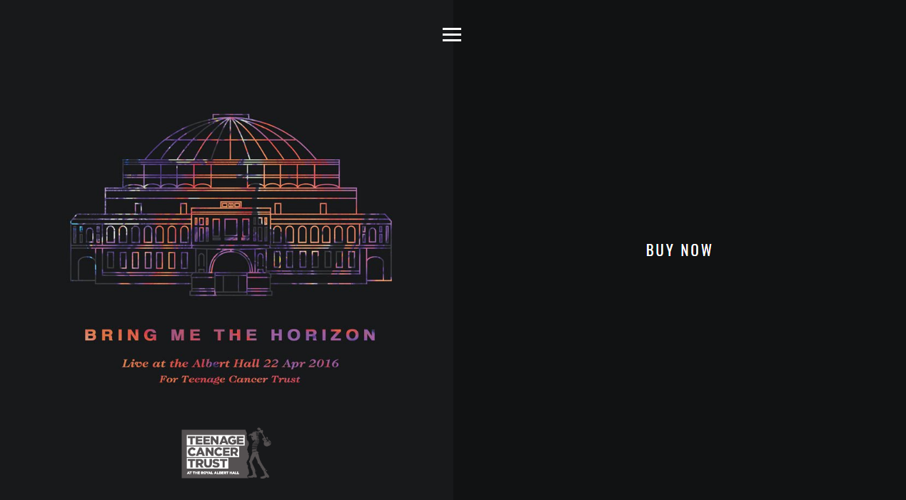
Positief:
- Simpel maar duidelijke menu
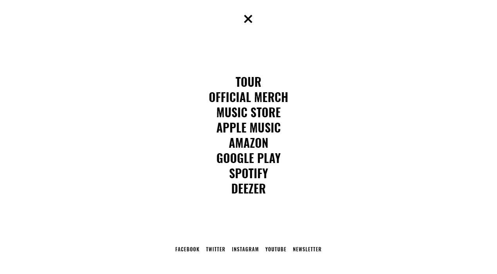
- Aparte site voor verkoop van dingen.
- Mobile: De site blijft vrijwel hetzelfde op je GSM.
Negatief:
- Te simplistisch waardoor het licht amateuristisch overkomt.
- Menu knop in het midden.
- Site is niet up to date.
- Ontbrekende info. Wie zijn ze?
- Lange laadtijden voor bepaalde zaken (bv. de youtubevideos op de homepagina).
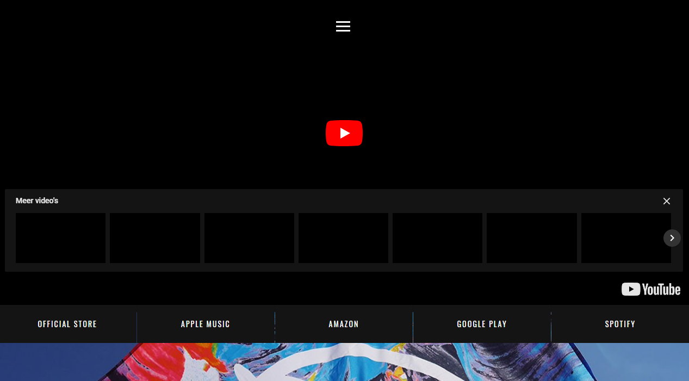
- Als je iets wil bestellen, moet je eerst een account aanmaken of verbinden met facebook. De prijzen blijven in pond staan en er is geen mogelijkheid om deze via de site om te zetten naar Euro.
- Informatie wordt niet zo duidelijk overgebracht.
- Er zijn verschillende aparte sites voor dingen te bestellen.
2. Of Mice & Men
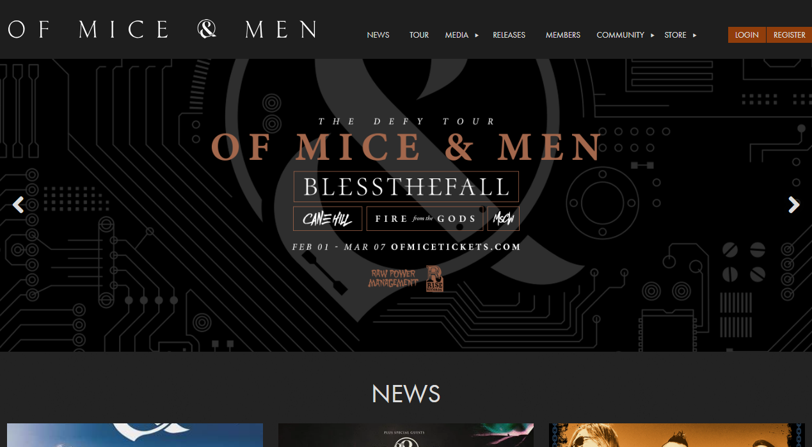
Positief:
- Duidelijke site en duidelijke menu.
- Snelle laadtijden.
- Menu is overzichtelijk met duidelijke deelmenu's.
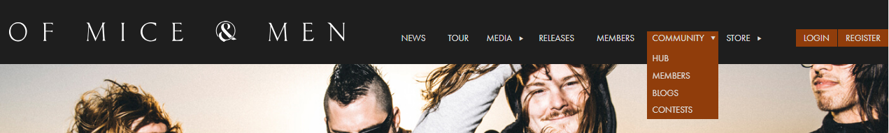
- Als je iets wil bestellen, wordt je doorverwezen naar een andere site.
- Mogelijkheid tot aanmaken account
- Social media logo's duidelijk onderaan de site.
- Vast en overeenstemmend kleurengebruik
Negatief:
- Foto's worden in een 'kot' geplaatst zodat de foto's niet duidelijk zijn. Aangepaste foto's zouden veel beter zijn.
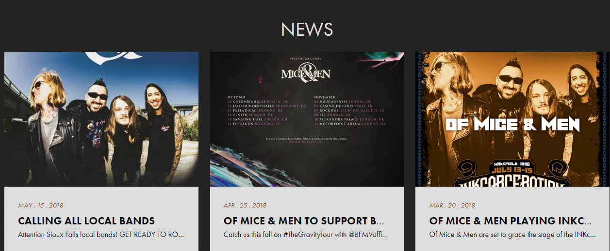
- Menu op GSM is direct alles bij elkaar, zonder onderverdelingen zoals op de site
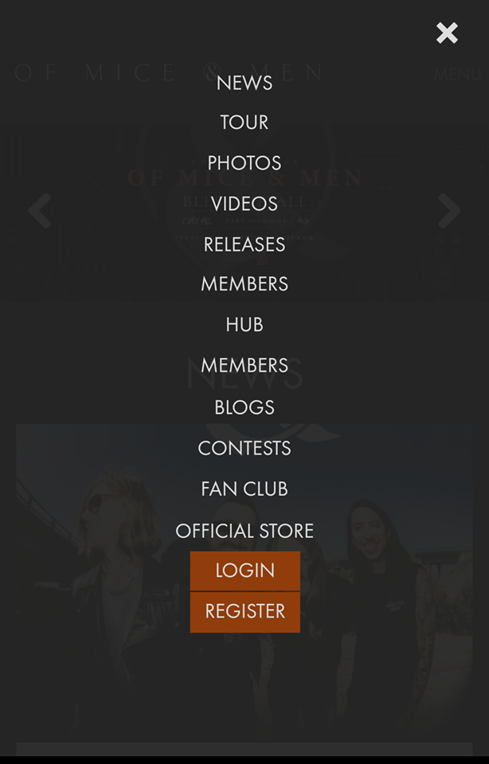
- Via de GSM is de site opeens veel simplistischer en komt hij veel minder tot zijn recht t.o.v. op de site
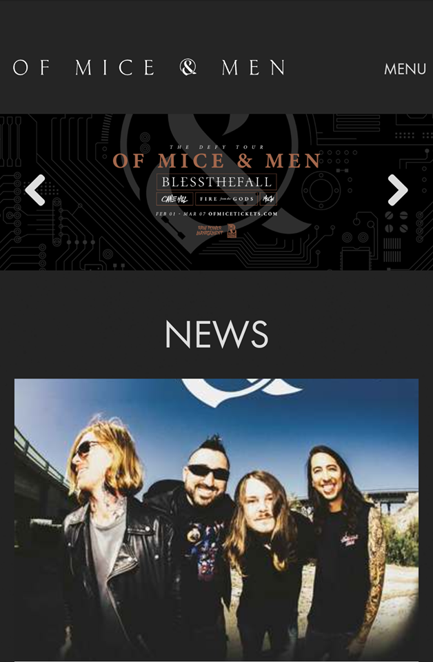
A Day To Remember
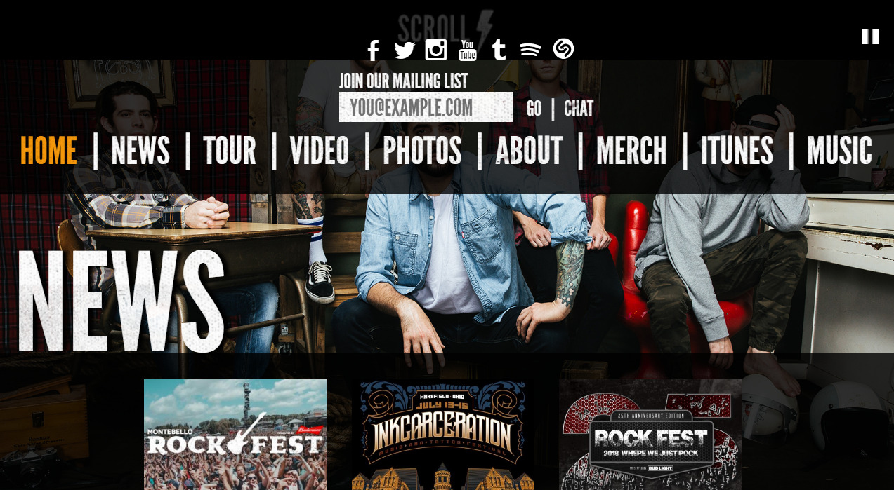
Positief:
- Social media logo's
- Mogelijkheid tot inschrijven nieuwsbrief
- Chat-mogelijkheid.
- Alle info is te vinden op de site.
- Via de GSM is de site veel duidelijker en komt hij niet zo chaotisch over als via de computer.
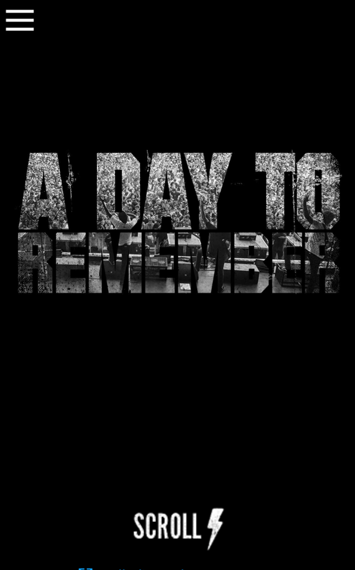
Negatief:
- Lange laadtijd van de site.
- Doordat de achtergrondfoto telkens meebeweegt en de vlakken waar tekst op staat licht transparant zijn, geeft dit een zeer chaotisch beeld.
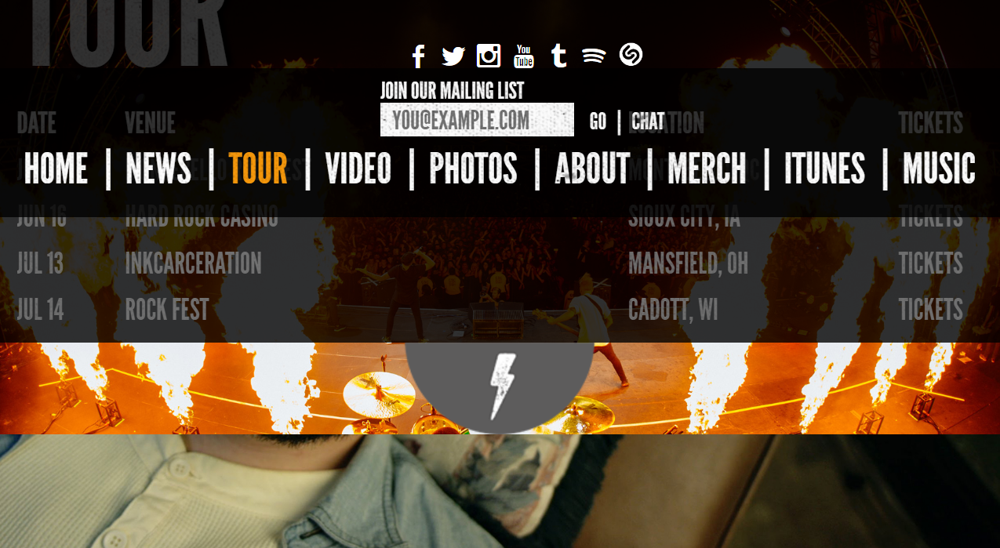
- Menu/Homepagina is eigenlijk 1 grote pagina waar constant naar boven en onder gescrold wordt.
- Site komt amateuristisch over. zoals in het voorbeeld hieronder staan er grote, lange doorlopende teksten?
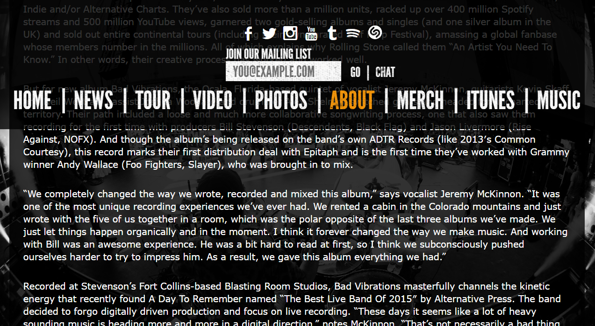
- Te bombastische menubalk
- De Menubalk staat vast maar doordat deze zo groot is zoals hierboven te zien, neemt deze constant net niet de helft van de pagina in beslag.